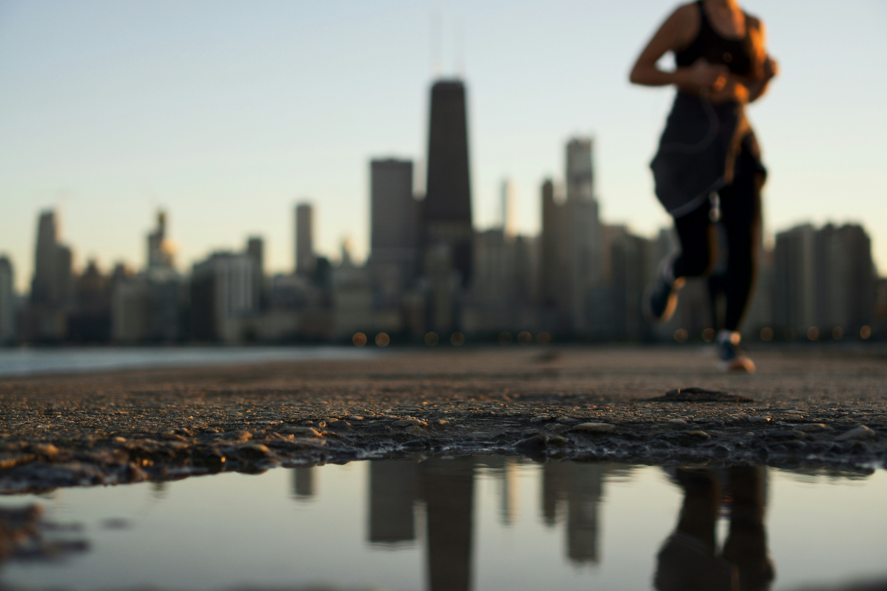
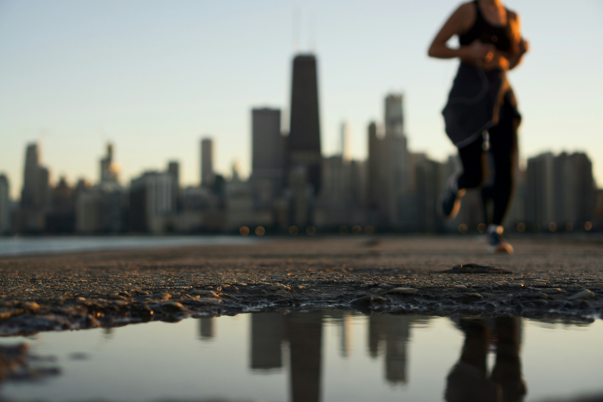

Wpadamy w pułapki własnego umysłu, kiedy nie dostrzegamy wyjścia z trudnej sytuacji. Czujemy się uwięzieni w negatywnych schematach myślenia, nie widząc, że rozwiązanie często jest bliżej, niż nam się wydaje.
Pierwszym krokiem do zmiany jest uświadomienie sobie problemu – to jak chwycenie za drabinę, która pomoże nam się wydostać. Zrozumienie, że istnieje wyjście, to początek drogi do wolności i lepszego samopoczucia.

Stres jest jak balon – jeśli go nie uwolnisz w kontrolowany sposób, wybuchnie...
Sport to najlepszy wentyl bezpieczeństwa – idź pobiegać, poboksować albo chociaż pomachać łopatą w ogródku. Jeśli to nie pomaga, wypróbuj techniki relaksacyjne, głębokie oddychanie lub po prostu wyśpij się.
Nie pozwól, by stres rządził tobą. To ty masz pilota do własnej psychiki – przełącz kanał na coś bardziej pozytywnego!
 

Stres jest nieunikniony, ale zamiast wyładowywać go na dzieciach (lub innych 😆), lepiej spróbować sportu, technik oddechowych i śmiechu!